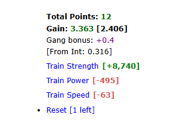

What does it do?
The University Helper is designed to help you balance your character's stats efficiently. It allows you to set a desired "Stat Ratio" and visually highlights stats that are falling behind, so you know exactly what to train next.
Visual Example
Here is how the University looks when certain stats drop below your desired ratio (highlighted in red):

How to use it
- Visit the University.
- Beneath your current stats, you will see a new Update Ratio Goal section.
- Enter your desired build ratio separated by slashes (for example,
2/2/1for Power/Speed/Strength). - Click Save.
- The script will calculate your true base stats (stripping away equipment bonuses) and highlight any stat in red that is currently below the target threshold.
Note: Your configured Stat Ratios are backed up across devices via Cloud Sync!